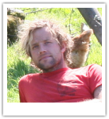
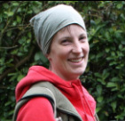
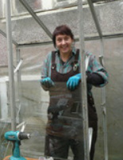
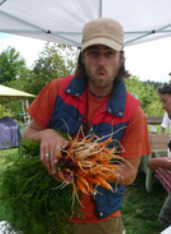

Yummy Yards was founded in 2011 and has changed hands and places a few times over the years. We began by growing food in people's yards and on city boulevards but now we're leasing two acres of land at Urban Edibles Farm in Richmond. We grow a wide variety of flowers, herbs and vegetables and have begun raising chickens and bees for eggs and honey. Our food is grown naturally, without the use of pesticides or synthetic fertilizers. We are conscientious about how we go about caring for the land, people, and animals.
2015 + 2016 Farmers
Adam
Adam is a man of few words and fewer thoughts. He likes pushing around wheelbarrows and forking over piles of compost. His goal in life is to bark mulch the entire planet.
Chelsea

Chelsea takes care of farm planning, administration, marketing, communications, nursery operations, planting, watering. and, well, pretty much everything except bark mulching.
|
Andrew
Andrew has big dreams of growing a sustainable farm business. With eight years experience in culinary arts, he can attest that quality vegetables are rare, and not often found in grocery stores.
Sibella
Sibella is a woman of simple needs. Chicken holding, fruit juice and plain noodles are her main sources of daily satisfaction, and the source of her super human strength.
|
2014 Farmers
Lauren
Lauren studied at the Outdoor Adventure Naturalist program in Ontario and came to realize the incredible nutritional and medicinal properties of plants. All of this led her to one amazing epiphany: We can grow our own food and return to a more simplistic and sustainable lifestyle.
|
Heather

Heather became interested in our food systems while in university, studying global environment and sustainable development. She thinks the best way to build community is for people to connect to something, like food, that everyone can relate to and that further connects them with the land and the whole system upon which they depend.
|
2013 Farmers
Eirynn

Eirinn got involved in farming as a natural extension of the punk / DIY / DIT ethos. Hir plan is simple: learn as many skills as possible, find a neglected plot of land somewhere hidden and winsome, establish a feminist commune.
Jenn

Jenn has wanted to be a farmer since she was little. Discovering small scale, local farms was the key to relighting that passion as an adult. She now spends more and more of her time growing plants, pulling weeds, hugging trees and playing in the dirt.
|
Luna
Luna is an excitable young lady completing her third year of an agricultural degree at UBC. Her long term goals are to have an organic animal and vegetable farm at the edge of a city at the edge of the Pacific. She loves being outdoors, rolling around in the soil, and drinking from a trough...in many ways she is similar to a pig...
Mert

Mert gets a kick out of rolling in dirt and having a good time with the rest of the Yummy Yards crew. He grew up in the concrete jungle and is now catching up with farmy ways
|
2012 Farmers
Shelley
"I come from a financial background and worked in grains/peas export industry. My first experience with growing vegetables started in 2010 with a roof top plot. The interest has kept growing ever since while the growing process opened my eyes to what food safety and sustainable living means to individuals like me, and how community can be connected through food. I'm more than thrilled to start a season with Yummy Yards, ready to learn, contribute, enjoy, and meet people of diverse backgrounds but like minds."
FinnFin was part of the dynamite 2012 Internship Team. He was also the lead Edible Landscaper at Yummy Yards throughout the 2013 season.
Fin is a fan of edible flowers and brevity. He is disappointed that cheese doesn't grow on a vine. |
Kim
Kim's a busy gal and there just aren't enough hours in the day to summarize her amazing list of talents and experiences that brought her to the Yummy Yards team... She'll get to it one day!
Eirlys"I've been enthusiastically growing food in urban spaces for a few years - in containers, gardens and allotments - and now I have an insatiable bug! I love vegetables, fruit, herbs and edible flowers, making beautiful edible spaces, and gardening with other people. This season with Yummy Yards I'm particularly excited to learn more about soil, and get acquainted with chickens. Now and in the future, I hope to contribute to making our food systems more ecological and socially just - we have a lot of work to do and I wanna dig in!"
|
2011 Farmers and Founders
Emi
Emi is a city girl with a passion for growing delicious, fresh vegetables in an ecologically, personally and economically sustainable way. Now studying agriculture and food co-operatives in Japan, Emi's founding vision and dedicated hard work launched Yummy Yards and will never be forgotten.
|
KateKate co-founded Yummy Yards in 2011. On a lazy summer afternoon, the idea for Yummy Yards emerged. Though she is now back in Australia, Kate's energy and charisma helped shape Yummy Yards and her contribution will always be appreciated.
|
Mark
Mark joined Yummy Yards halfway through 2011. With an eye for detail, and a background in the culinary arts, Mark demonstrated his passion for food at every step along the food chain.